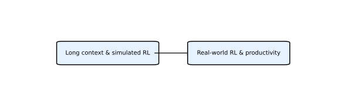

MiniMax AI 是一家开放权重大模型提供者，其 MiniMax 系列聚焦混合注意力架构、高效推理和真实世界生产力。以下总结各版本的主要特点和创新。
模型基于 MiniMax‑Text‑01，采用混合专家 (MoE) 架构与 lightning attention 结合，总参数约 456 亿，每 token 激活 45.9 亿。M1 原生支持 100 万 token 上下文，并使用 CISPO 算法在数学推理和软件工程环境中进行 RL 训练【132075084091887†L411-L437】。
通过在数十万真实工作环境中强化学习训练，M2.5 在编码、搜索和办公任务上取得领先成绩。它在 SWE‑Bench Verified、Multi‑SWE‑Bench 和 BrowseComp 等基准上超过前代模型，并以低成本提供高效率推理【195727672155230†L110-L120】【195727672155230†L123-L127】。
M3 官方定位为同时具备 Coding Frontier+、1M 上下文窗口和原生多模态的开放权重路线模型，配套更新 MiniMax Code。其 MiniMax Sparse Attention（MSA）通过更精确的 KV 分块和 KV outer gather Q 优化百万上下文计算，官方披露在 100 万上下文下每 token 计算量约为上代模型的 1/20，prefill 超过 9 倍加速，decode 超过 15 倍加速。
M3 支持图像、视频输入与桌面操作，适合论文复现、代码审查和复杂 GUI 场景。官方资料入口包括 M3 模型页、M3 技术报告 和 M3 GitHub。

MiniMax 系列的技术路线可以归纳为三个阶段：
M1 通过混合专家架构与 lightning attention 实现 100 万 token 的上下文长度，并在数学推理和软件工程等模拟环境中使用 CISPO 算法进行 RL 训练，从而验证了长上下文模型的可行性【132075084091887†L411-L437】。
M2.5 将强化学习推广至真实工作场景，模型在数十万真实环境中学习编码、搜索、工具调用和办公任务，并通过 Forge RL 框架提升训练效率。其在 SWE‑Bench Verified、Multi‑SWE‑Bench、BrowseComp 等基准上的表现和极低的推理成本表明该模型正在朝着实际生产力工具迈进【195727672155230†L110-L120】【195727672155230†L123-L127】【195727672155230†L261-L291】。
M3 把 MiniMax 的路线推进到长程 Agent：Coding Frontier+ 负责执行质量，MSA 支撑 1M 上下文工作记忆，原生多模态让模型处理截图、图表、视频和桌面状态。配套 MiniMax Code 说明其目标不是单轮聊天，而是仓库级开发、测试、调试和持续修复。
下图用英文标签概括 MiniMax 路线的两个阶段，帮助直观理解从仿真 RL 到真实环境 RL 的过渡：

下表列出 MiniMax 系列资料的 Markdown 分析及对应 HTML 页面。
| 名称 | Markdown 分析 | HTML 页面 |
|---|---|---|
| MiniMax‑M1 | minimax_m1.md | minimax_m1.html |
| MiniMax‑M2.5 | minimax_m2_5.md | minimax_m2_5.html |
| MiniMax M3 | minimax_m3.md | minimax_m3.html |